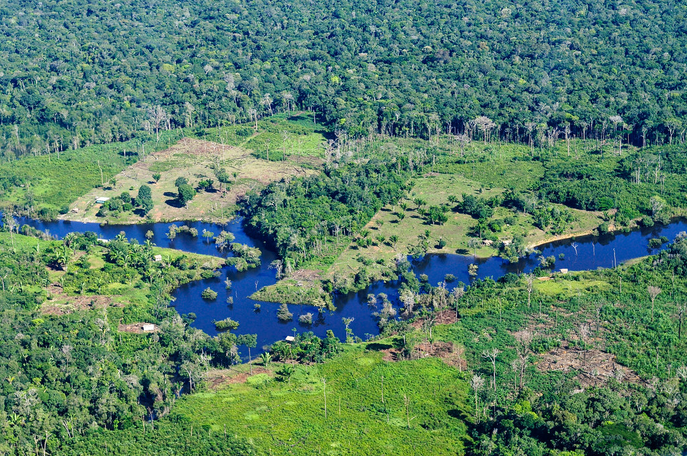
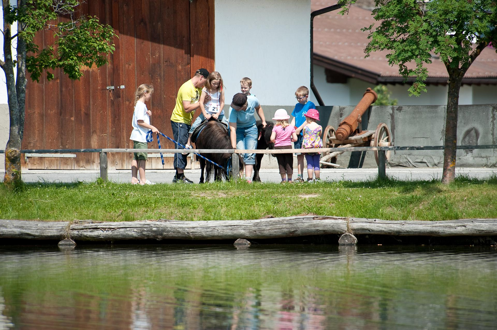
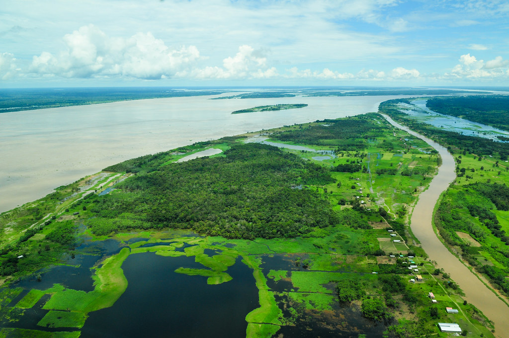
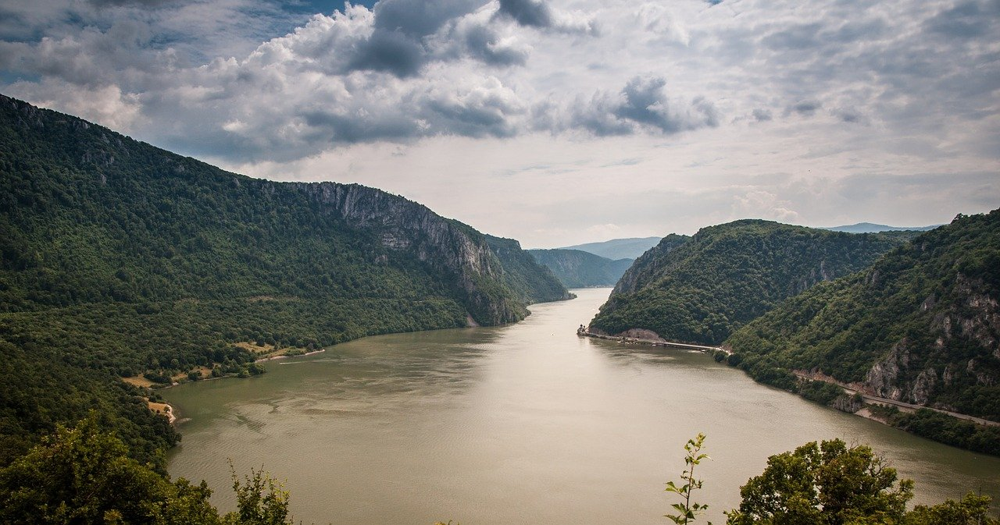

Protect, restore and promote
Terrestrial ecosystems provide a variety of goods, such as raw materials for construction and energy, food, and a variety of ecosystem services, such as carbon capture, soil quality maintenance, biodiversity habitat provision, water quality maintenance, water flow regulation, and erosion control, all of which help to reduce the risk of natural disasters like floods. Climate change mitigation and adaptation efforts are considerably aided by maintaining certain ecosystems.Protecting, restoring, and promoting the conservation and sustainable use of terrestrial and other ecosystems are all necessary for preserving varied types of life on land. Goal 15 focuses on sustainable forest management, reducing and reversing land and natural habitat deterioration, effectively combating desertification, and halting biodiversity loss. All of these initiatives are aimed at ensuring that the benefits of land-based ecosystems, such as sustainable livelihoods, are enjoyed for future generations.

Sustainably manage forests
Forests are essential for global sustainable development, as they have an impact on both the natural environment and economic prosperity. They are home to 80% of the world's terrestrial species, supply clean water, prevent soil erosion and flooding, and can contribute one-third of the carbon mitigation efforts required to keep global warming below 2°C. Forests provide nourishment, duel, and medical plants to 1.6 billion people globally, and the forestry industry employs 10 million people.
Human population growth
One of the primary drivers of biodiversity loss is human population growth. Since 1970, humanity have lost 60% of all vertebrate wildlife populations, according to WWF. Our population has more than doubled in that time. Human population increase is an indirect driver of biodiversity loss, according to a landmark UN report released in 2019 that stated: “Changes to the primary drivers of environmental deterioration cannot be realized without revolutionary change that simultaneously tackles the indirect drivers.” Conservation efforts must include demographic solutions to be genuinely effective in the long run.
Month Goal
Every month, the United Nations System in Brazil highlights at least one of the 17 Sustainable Development Goals in the context of key dates, events, and thematic priorities, in order to offer it to the public in an informative, relevant, and engaging manner.The goal of this activity is to offer the company with an opportunity to learn more about the UN's 2030 Agenda for Sustainable Development goals and objectives every month.
The "Month Goals" for May were SDG 8 (Decent Work and Economic Growth) and SDG 15.
UNODC will work to combat illegal logging and timber trafficking by improving national law enforcement, prosecutorial, and judicial capacity, strengthening anti-corruption measures, strengthening legislation and international cooperation, and supporting timber identification methods, among other things. All of these impact-based initiatives help to keep forests from degrading. Furthermore, through land stabilization initiatives and by assisting communities affected by climate change in building resilience, the Alternative Development programs contribute to the preservation and sustainable use of natural resources.
Wildlife and forest crime has evolved into a low-risk, high-profit transnational organized crime that is wreaking havoc on governments and communities while threatening biodiversity and prosperity. UNODC will continue to work with law enforcement, prosecutors, the judiciary, and other relevant stakeholders at the national and international level to address this issue through its Global Programme for Combating Wildlife and Forest Crime. Through its global wildlife crime research, the UNODC is leading efforts to strengthen national legal frameworks, law enforcement, prosecutorial, and judicial capability, create international cooperation, develop novel forensic solutions, and undertake research. UNODC supports the monitoring of SDG 15, specifically Target 15.7, through this global research effort. UNODC hopes to assist countries in achieving SDG 15 by eliminating organized wildlife and forest crime through tangible, measurable evidence-based initiatives in the coming years. UNODC is a member of the International Consortium on Combating Wildlife Crime (ICCWC), which is made up of five global organizations that work together to provide multi-agency assistance to nations affected by illegal wildlife trade.

Forest Regeneration
Because tree seedlings are particularly susceptible to climate change, climate changes such as a wide range of temperature shifts and a wide range of water availability can limit tree species' regeneration capability. It has been demonstrated that increasing temperature in the range of 1.0–4.5 °C and reducing precipitation by 3 to 25% may alter tree species regeneration at both the landscape and site level in future decades in the Eucalyptus forest of Australia. However, the pace of regeneration differed depending on the species and ecosystem (Mok et al. 2012). Furthermore, these environmental differences have revealed a threshold for a shift in species regeneration habitats. Eucalyptus delegatensis and Eucalyptus pauciflora species are sensitive to climate change in Victoria, Australia's Central Highlands. Because of the decrease in precipitation and the increase in temperature, these species niches receded from lower elevations and concentrated at higher elevations (Mok et al. 2012). Reduced precipitation and increasing temperature had a substantial impact on the seedling mortality rate of Aextoxicon punctatum in temperate forests (Parada and Lusk 2011).Drought is one of the factors that can hinder seedling establishment. Drought-induced canopy losses of Pinus sylvestris can diminish Quercus spp. germination in the understory, but they can also encourage the establishment of light-demanding species that were already established prior to the drought (Galiano et al. 2013). In addition, one of the effects of climate change, fire, can have an impact on seedling density. The seedling density of burned tropical moist deciduous forest was 63 percent lower than that of unburned woodland (Kodanadapani et al. 2008). The frequency of fire can also affect seedling density. The seedling density of tropical dry thorn forest impacted by moderate and high fire frequency was higher than that of forest influenced by lower fire frequency in tropical dry thorn forest. Seedling density was 82 percent higher in forests with moderate fire frequency than in forests with lower fire frequency, whereas seedling density in forests with high fire frequency was 47 percent higher than in forests with lower fire frequency (Table 2). In tropical dry deciduous forest, however, seedling density was 30 percent lower in high-fire-frequency forests than in low-fire-frequency forests. There was no discernible difference in fire frequency between medium (two to five fires) and high (more than five fires) (Kodanadapani et al. 2008). Seedling density in Amazonian forests was reduced by 63 percent and 85 percent in forest burned twice and forest burned five times, respectively (Balch et al. 2013). The number of seedlings appeared to be more than five times higher in unburned plots than in burned plots in transitional dry forest types (Massad et al. 2013). Table 2 summarizes the findings of the seedling survival study.
